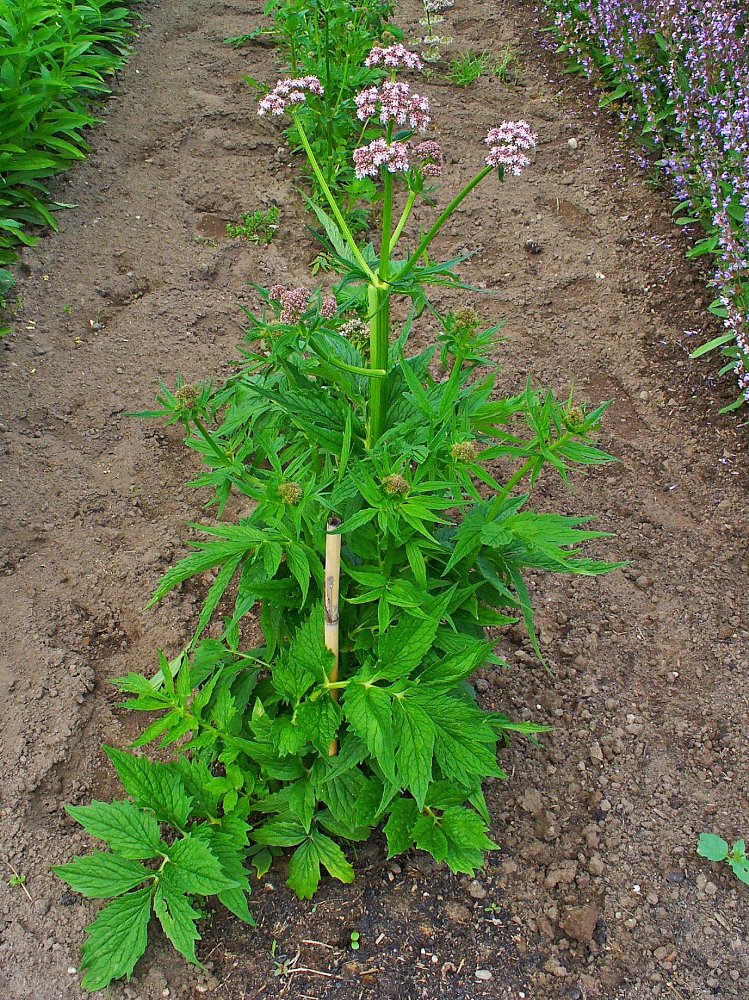
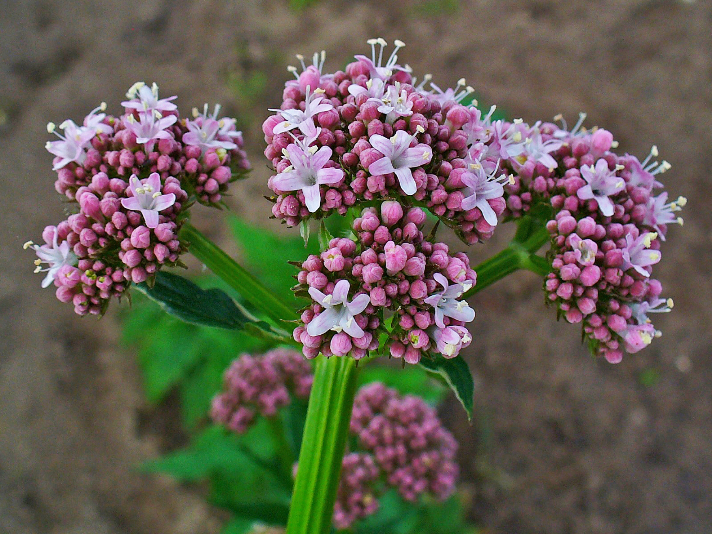

Valeriana officinalis
| common name | valerian | |
| en español | valeriana | |
| name in Āyurveda | tagara (तगर) | |
| plant family | Caprifoliaceae (honeysuckle) | |
| parts used | fresh and dried root |
 from Wikimedia Commons by H. Zell - Own work, CC BY-SA 3.0
{kind=link}
 from Wikimedia Commons by H. Zell - Own work, CC BY-SA 3.0
{kind=link}
observations/description
dried root
- small, thin, twig-like pieces of light brown root
- intense, sweet, fruity, floral aroma, so concentrated it almost smells artificial
"Valerian (herb)", Wikipedia
- erect stems are unbranched, with pinnately divided, toothed leaves
- flowers are white or light pink, grouped in both compound and secondary clusters, with a sweet scent
distribution/conservation status
"Valerian (herb)", Wikipedia
- native to Europe and Asia
- widespread in Britain
- considered an invasive species in many locations outside its natural range, including the U.S. state of Connecticut where it is officially banned, and in New Brunswick, Canada, where it is listed as a plant of concern
primary actions
The Yoga of Herbs, p. 150-1
- nervine, antispasmodic, sedative, carminative
The Modern Herbal Dispensatory, p. 317
- analgesic, antispasmodic, nervine, sedative, soporific, hypnotic
The New Age Herbalist, p. 124
- sedative, nervine, stimulant, anxiolytic, hypotensive, antispasmodic, carminative
notes from class, 27 May 2025
- analgesic, antidepressant, antispasmodic, anxiolytic, nervine, relaxant, sedative
system affinities
nervous, muscular
primary uses
The Yoga of Herbs, p. 150-1
- one of the best herbs for nervous disorders stemming from overactive vāta
- insomnia, hysteria, delirium, neuralgia, convulsions, epilepsy, vertigo, nervous cough, dysmenorrhea, palpitations, migraine, chronic skin diseases
- cleanses āma from the colon, blood, joints, and nerves
- clears the nerve channels of accumulated āma
- grounding: dispels vertigo, fainting, and hysteria
- calms muscle spasms and alleviates menstrual cramps
- stops fermentation in the digestive tract
- has a calming action on the female reproductive system
- tamasic: excess use can dull the mind
- with calamus to balance its heavy property
- 1-2 tsp of powder in warm water for sleep
- carminative; useful for flatulence and colic
The New Age Herbalist, p. 124
- has a sedative effect on the central nervous system
- excellent remedy for anxiety, nervous tension, and insomnia
- good for treating headaches
- strengthening action on the heart; good for treating palpitations and helps lower blood pressure
- valepotriates are antispasmodic; useful remedy for nervous dyspepsia, stomach cramps, spastic or irritable bowel, and menstrual cramps
- tincture helps clear dandruff
The Modern Herbal Dispensatory, p. 317
- popular and potent nervine with strong tranquilizing effects on the central nervous system
- treats a wide variety of nervous system conditions, insomnia, and mild pain
- seems to work most consistently on people with sympathetic excess (indicated by enlarged pupils)
- those with parasympathetic excess (indicated by small pupils) are more prone to be stimulated by valerian
notes from class, 27 May 2025
- heavy-duty sedative
- good for muscle tension and anxiety, sleep with pain and spasms, restless leg syndrome, Lyme
energetics
The Yoga of Herbs, p. 150-1
- reduces vāta, kapha; increases pitta (in excess)
- bitter/pungent/sweet/astringent taste - pungent post-digestive effect
- heating
The Modern Herbal Dispensatory, p. 317
- relaxing, slightly warming
notes from class, 27 May 2025
- acrid, bitter, warming
pharmacology
The New Age Herbalist, p. 124
- volatile oil (up to 2%)
- contains esters of acetic, butyric, and isovalerianic acids
- when the root dries these esters yield isovalerianic acid, which gives the characteristic aroma
- valepotriates (incl. valtrate, didovaltrate), glycoside (valerosidatum), limonene, a sesquiterpene, valerian camphor, alkaloids, chatinine, valerianine, actinidine, valerine, choline, tannins, resins
contraindications/pharmaceutical interactions/warnings
The Yoga of Herbs, p. 150-1
- large dosages produce paralysis (overly constricts vāta)
The New Age Herbalist, p. 124
- may cause headaches, muscular spasm, and palpitations
- use only as prescribed by a qualified practitioner
- avoid large doses and prolonged use
The Modern Herbal Dispensatory, p. 317
- not recommended for people with 'hot' disorders, i.e., high-strung, nervous, excitable people
- not recommended for long-term use in high doses (although there is no risk of addiction)
- some people find it stimulating rather than sedating
- low thyroid and dose may be contributing factors
- some may experience a 'light' feeling as if floating in air and/or hallucinations at night
notes from class, 27 May 2025
- more reliable fresh than dried
- dried plant may be more likely to be stimulating rather than sedative
- sometimes fresh plant doesn’t work for sleep, but rarely is stimulating
- need to allow 8 hours to sleep and not wake up groggy
- test during a time where it’s okay if they become either stimulated or sedated, e.g., a Saturday afternoon (with a smaller dose)
- considered to be non-addictive, but people can get addicted to using herbs for sleep support in general
- use every day for 2-3 weeks, then start taking days off
Herbal Materia Medica, p. 38
- constant use of dried root can induce mental agitation
preparations
The Modern Herbal Dispensatory, p. 317
- standard infusion
- dried root, 30 g: 1 L
- tincture
- fresh root, 1:2, 95% alcohol
- dried root, 1:5, 60% alcohol
- powder
Herbal Materia Medica, p. 38
- tincture
- fresh whole plant, 1:2
- dried root, 1:5, 70% alcohol
- powder
The Herbal Medicine-Maker's Handbook, p. 110, 156, 192
- hot infusion
- dried root, 2-5 g: 8 oz
- tincture
- fresh root, 1:1.5 or 1:2, 100% alcohol
- glycerite
- fresh root, 1:1.5 or 1:2, 100% glycerin
- recently dried root, 1:5, 60% glycerin
The Yoga of Herbs, p. 78, 150-1
- decoction
- dried root, 1:16, reduce to 1/4 original amount
- powder
dosage
The Modern Herbal Dispensatory, p. 317
- infusion: 4-8 oz 30 minutes before sleep
- tincture: 10 drops-3 mL 30 mintues before sleep or up to 4/day for mild pain/stress
- powder: 500-1000 mg 30 minutes beofre sleep or up to 4/day for mild pain/stress
Herbal Materia Medica, p. 38
- tincture: 30-90 drops, up to 3/day
- powder: 2-3 #00 capsules
The Herbal Medicine-Maker's Handbook, p. 110, 156, 187
- hot infusion: 8 oz, 3/day
- tincture: 1-3 mL, up to 3/day
- glycerite: 10-25 drops, 3-4/day
The Yoga of Herbs, p. 78, 150-1
- decoction: 2 oz, 3/day
- powder: 250-1000 mg, 3/day
notes from class, 27 May 2025
- tincture: 5-10 drops during the day, 10 drops-1 tsp at night for sleep
- for sleep take up to 2 mL then wait 30 minutes, then have more if sleeping is not coming
extra information
The New Age Herbalist, p. 124
- used to be classified under its own family Valerianaceae
personal experiences/simples
tisane (5 g: 8 oz, 20 minutes), dried root
- light golden yellow color
- aroma is still quite strong and fruity, reminds me of blueberries, especially their skins
- soft, sweet, bitter flavor; fruity, again reminiscent of blueberry
- something slightly savory in there as well
- flavor is like a messa di voce: starts very soft then builds to a full body, then fades
- leaves more of a residual mouthfeel as i drink
- fell asleep easily, slept deeply for 9 hours
- entire body feels relaxed/lax; both the mind and the body are encouraged to fall into sleep
witchcraft
The Witch's Encyclopedia of Magical Plants, p. 313-4
- used to deter/ward off witches
- believed to protect against the plague
- wearing a sprig was supposed to attract a lover/suitors
- associated with the Pied Piper; used to lure rats away from Hamelin
- elements: water
- astrological influence: scorpio, virgo, mercury, venus
recipes
sources
Easely, Thomas and Steven Horne. The Modern Herbal Dispensatory (2016)
Frawley, David and Vasant Lad. The Yoga of Herbs: An Ayurvedic Guide to Herbal Medicine (1986)
Goldberg Blackthorn, Samantha and Shona MacDougal. Ace of Cups Herbal Medicine and Botanical Magic Herbal School (2024)
Green, James. The Herbal Medicine-Maker's Handbook: A Home Manual (2000)
Kynes, Sandra. The Witch's Encyclopedia of Magical Plants (2024)
Mabey, Richard et al. The New Age Herbalist (1988)
Moore, Michael. Herbal Materia Medica, Fifth Edition (1995)
"Valerian (herb)" on Wikipedia. Retrieved 29 May 2025.